第八篇 · 可观测性、故障分析与性能实践
第35章 常见故障的原理与定位
症状是入口，原因需要能够区分候选解释的证据。内存增长、忙等、锁等待和暂停应按各自的时间与所有权关系分析，不能由一个醒目的数字包办诊断。
本章以 Java 开发工具包（Java Development Kit，JDK）25.0.5.0.2、Java 虚拟机（Java Virtual Machine，JVM）的 OpenJDK HotSpot 实现为基线，提交1775ea114f64；本机为macOS AArch64。源码阅读 · 运行说明 · 证据索引。
35.1 不同区域的内存增长
35.1.1 先分清增加的是哪本账
Java堆使用、回收后的存活集、元空间提交、本地分配和系统驻留可以朝不同方向变化。加载器被长期持有会连带保留类型及元数据，直接缓冲或外部内存的释放则依赖各自所有权；进程虚拟空间变大也不等于物理内存已经用完。第9—12章的区域边界在排障时必须继续保留。
CH35-E01的memory模式只保留24个256千字节数组，共6,291,456字节，低于64兆字节堆上限；随后清空集合。它是有限持有与释放的教学案例，没有制造内存耗尽，也不把这段有意增长直接叫作生产泄漏。

35.1.2 类型总量不能代替持有路径
两次实际类直方图中byte数组合计从6,791,504字节降到499,720字节；两次命令会请求回收，日志保留了这项干扰。因此证据支持教学数组已不再作为原集合的存活集保留；它不证明进程驻留立即下降，也没有指出任意数组的支配者。
真正怀疑泄漏时，要比较相同负载阶段和回收口径，沿根到对象的持有路径判断谁拥有生命周期。支配者表示从根到目标的所有路径都经过它，保留大小取决于整个对象图，不能用浅大小相加冒充。本地内存跟踪（Native Memory Tracking，NMT）差异、系统统计和对象图解释不同层面；本轮没有堆转储支配树实测。
35.2 处理器高占用与编译异常
35.2.1 把进程、线程和方法连起来
中央处理器（Central Processing Unit，CPU）高占用可以来自业务计算、忙等、编译或回收。先用系统采样确认持续性，再关联线程标识和多次栈，再用事件或采样确认热点。只看到RUNNABLE不能区分正在执行、等待本地资源和调度排队。
CH35-E02有五秒明确截止时间。两次Thread.print均把main放在cpu计算循环，处理器统计和飞行记录共同保留；热点视图的432个样本全部指向BoundedSymptoms.cpu。它支持这段窗口内持续业务计算，不证明任意一次同名栈都会占满一个核。[O01]
35.2.2 重复编译要区分生成、失效和运行触发
第18章已经保留实际去优化与编译关联证据。排障需要区分编译日志中生成的潜在陷阱、运行时真正触发的事件，以及代码被标为不可进入的状态。后者也可能来自正常替换或工具重定义，不能一律说成“发生编译异常”。
如果怀疑频繁去优化拖慢应用，按相同方法与编译标识关联事件频率、原因、后续重编译和业务区间，再排除正常预热。减少优化级别可能缓解抖动，却改变峰值和资源成本；本章没有新增反复去优化负载或据此修改全局编译参数。
35.3 死锁、锁竞争与线程资源
35.3.1 等待链和等待环支持不同结论
CH35-E03让left-to-right先持LEFT，right-to-left先持RIGHT，双方再等待对方的锁；第二次取得使用四秒超时。实际转储报告一个Java级死锁并列出两个可拥有同步器的环。超时随后打破等待，两线程正常退出。因此“某时点存在环”与“永久无法退出”应分别陈述。
长期持有者造成的单向等待不必形成环；条件等待可能是在正常等待尚未满足的业务条件。应先标注每条边是“持有”“等待取得”还是“等待条件”，再问谁有能力推进。把所有WAITING加总就称死锁，会掩盖等待的协议和超时。

35.3.2 线程数量不是有效并行数
平台线程创建失败涉及本地栈、地址空间、系统／进程线程上限及容器进程数限制，增加Java堆未必有帮助。虚拟线程需要载体，载体被本地调用占用、调度预算不足或外部资源排队，都可能让任务增长而完成量不增长。第28章的本地固定证据仍适用。
25版普通同步等待不沿用旧版“一进入synchronized就固定”的概括，但卸载不解除业务互斥。虚拟线程转储与传统死锁检测的范围不同，本轮死锁报告只针对平台线程。未主动创建大量线程以触发失败，也未运行Linux进程数耗尽；这些原因来自实现和系统契约分析。
35.4 暂停、分配停顿与容器终止
35.4.1 把延迟拆到机制边界
安全点到达慢、暂停内工作长、并发回收消耗和分配等待属于不同区间。统一日志中的到达与暂停分段应同事件关联；总垃圾收集（Garbage Collection，GC）周期时长不等于所有业务线程暂停时长，短暂停也不能排除并发阶段让应用缺少处理器或分配空间。
第20章已有到达、握手与暂停记录，第22—24章区分回收周期、退化和分配停顿；本章复用这些原始入口，不为列举症状制造资源耗尽。第34章183毫秒慢请求有监视器证据，不能因为“应用慢”就重新归类成GC暂停。
35.4.2 外部终止要到进程外找原因
Linux控制组（control group，cgroup）v2的memory.current包含组及后代内存，memory.events提供oom、oom_kill等计数，cpu.stat可显示配额节流。需要把进程退出、组路径、时间与宿主内核记录对齐；退出码137仅表明常见的被杀编码，单独不足以证明内存杀手。[S02]
用户同意本次按官方规则、锁定源码和已有本机证据验收容器部分。本机没有cgroup实测或终止日志，未编造容器内存耗尽案例。假如Java堆仍有余量而进程被外部终止，应检查本地内存、页缓存、同组其他进程及限制，不能默认增加-Xmx是修复。
35.5 崩溃日志与本地线索
35.5.1 先识别报告身份和现场
hs_err_pid类报告先看完整版本、信号、时间、问题帧和当前线程，再看Java／本地栈、动态库、参数和资源状态。锁定VMError::report依次组织这些字段，错误处理本身也可能再次失败，报告缺字段不等于对应资源不存在。[S01、S03]
25版官方指南仍保留历史格式示例：libMyApp.so里的Java_MyApp_readData问题帧指向发生访问异常的位置。示例版本是9-ea，不是本轮25版实测。这里只借它解释如何由库和偏移定位现场，不复制整份报告，也不触发新的本地崩溃。
35.5.2 损坏发生处可能早于崩溃位置
官方另一个历史例子里问题帧在虚拟机，而栈仍有App.dll回调本地边界。可提出“先前本地写坏内存”的候选解释，但一个VM帧不能直接证明虚拟机缺陷。需要匹配库二进制、符号、地址和调用约束，再用更具体证据区分编译器、调用契约、资源与硬件原因。[S03]
检查第32章的本地引用和内存生命周期尤其重要：释放后使用、越界、错误线程访问可能在晚些时候才显现。关闭优化或绕开某个方法可以是缓解措施，并未证明破坏的根因已修复。用户同意本轮以官方案例和锁定实现完成本节，真实崩溃复核继续保留为补充项。
35.6 从假设到原因定位
35.6.1 每个候选都写下一条区分证据
记录至少包含症状、已知事实、候选原因、反证条件、下一项最小观察和当前边界。内存案例的候选包括未释放持有、突发分配和已释放未回收；直方图在清空引用后下降排除了“这些数组仍被同一列表长期持有”，却没有证明操作系统驻留行为。
CPU案例用连续栈和样本支持计算循环；锁案例用拥有者与等待者形成具体环。它们分别排除“单次偶然栈”和“只有单向竞争”的部分替代解释。排除范围写得越具体，越能防止把一个有限教学结果套到所有故障。

| 案例 | 已知事实 | 支持与未排除 |
|---|---|---|
| 内存 | 释放后byte数组总量明显下降 | 支持可达持有解除；未做支配树与驻留归因 |
| CPU | 两次计算栈与432个同方法样本 | 支持持续计算；不代替每线程系统时间完整归账 |
| 锁 | 转储发现拥有者环，四秒超时退出 | 存在时点环；不是无限死锁 |
| 容器／崩溃 | 官方历史案例与当前实现 | 方法对照；无本机故障实测 |
35.6.2 修复解释要同时落在语义和效果上
根因修复改变造成故障的持有、锁顺序或调用契约；缓解可能只是扩大容量、缩短超时或降低并发。评价时同时看完成量、失败率、尾部延迟和资源成本。超时减少等待也可能增加失败，扩大堆可能转移容器风险，不能只找一个改善的数字。
本轮等待超时保证教学进程退出，并非推荐生产代码靠周期性超时解决锁顺序。第36章再用明确前后条件评估减少分配、缩窄持锁和资源作用域，保留无改善的结果。所有推理都应允许被下一份证据修正。
观察与边界
三种明确授权的有界案例均正常退出，原始栈、直方图、系统统计和飞行记录保留。没有主动内存耗尽、本地崩溃或容器终止；来源分析与本机观察分别标识，范围调整不扩展为其他实验的豁免。
回顾与思考
- 为什么直方图下降不能推出进程驻留立即下降？
- 转储报告死锁而进程随后退出，是否矛盾？
- 问题帧指向虚拟机时，哪类本地调用证据仍应保留？
来源与实现入口
- S01：锁定VMError::report、report_and_die，见实现阅读。
- S02：Linux内核cgroup v2接口文档；字段规则不是本机实测。
- S03：25版故障日志说明与崩溃诊断历史案例；示例版本与当前实现区分。
- O01：本轮三案例；第12、18、20、28章的复用证据入口见本章索引。